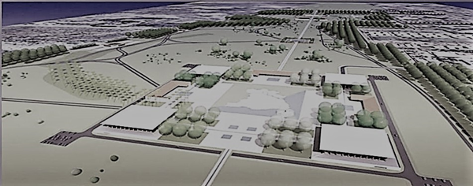

Evento: Expobr - Exposição de plantas nativas do cerrado
Nome do Espaço: Jardim Botânico Burle Max - Espaço criado para homenagear a vida e obra de Roberto Burle Marx. De 01/11 a 17/11 das 08:00 às
22:00.
Evento: Semana Ecológica e Sustentável - Palestra para adoção de medidas sustetável para a coleta de lixo seletiva e compostagem.

Nome do Espaço: Praça Viva o Povo Brasileiro - 90 mil metros quadrados sendo uma área destinada a eventos culturais, feiras e manifestações
históricas bem como discussão de assuntos ecológicos e sustentáveis. Dia 06/11 as 20:00.
Evento: Ciclo bsb - Circuito Noturno de ciclismo em Brasília
Nome do espaço: Ciclovias, saída do portão 3. Dias 08, 09 e 10 de novembro as 21:00.
Estacionamentos
Nome do Espaço: Estacionamento Inteligente - Desenvolvido com sensores que permitem a visualização de vagas disponíveis nos 17 espaços
destinados a estacionamento no parque Burle Marx. O estacionamento inteligente diminui a emissão de Co2 no ar pois, o motorista não precisará circular a procura de vagas dentro do parque.
Haverá a presença de câmeras instaladas estrategicamente em alguns pontos a fim de promover a segurança inteligente.
Evento: Música e Violão - Evento que receberá músicos de Brasília.
Nome do Espaço: Praça das Sombras - O espaço será montado com estruturas em bambú provocando um efeito de luz e sobra. Dias 04 e 25 de
novembro, em dois horários: 12:00 e 20:00.